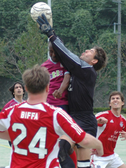
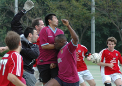
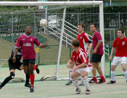

|
Fujitsu Big Circus, Hon Atsugi, Sun 17th Sept.
“Come on lads, let’s not start sucking each other’s d*$ks just yet!” came the cry from inspirational BEFC goalie Giles Lever mid-way through the second half of this clash between perennial Metropolis league yo-yo clubs BEFC and Maritizio. Quite what was meant by that comment no one in his own team really knew, but it seemed to have a galvanizing effect for BEFC as they trotted out to a 5-1 victory over their division 2 rivals. Rest assured, nothing was sucked (at least not by this central defender), and the embassy’s unbeaten 2006 continues in style.
Too many times in recent years have the British Embassy not won fixtures against teams such as Maritizio through not taking their chances and letting in daft goals. This time, however, despite a minor mid-second half wobble and a host of missed chances in the first, the embassy ran away with the spoils.
The first half began well for BEFC, and several chances went begging, until of course man-of-the-moment Steve “Crouchie” Lidbury picked the ball up just outside the box and unleashed a left-footer right into the top corner (well, he is left-footed, I suppose). 1-0 at the break, with the only trouble to the BEFC defence being a Maritizio break from a BEFC corner which Justin carried all the way up field before Tim “the terrier” Marchand and pals managed to recover and sniff out the danger.
The second half began with an early goal from the cultured left foot of, wait for it, Simon Collier (actually he’s left footed too, so…)- a beautiful move down the left finished with aplomb by the BEFC veteran. Collier, a man on fire, celebrated as if it were his first goal for two years. It turned out it actually was his first goal for two years - but that time he was putting it past his own keeper. Anyway, well worth the wait. 2-0.
The ensuing ten minutes or so saw Maritizio mount a series of attacks in an attempt to get back into the game, with new full back Ryan committing about 17 fouls in the space of 7 minutes (for which he almost got man-of-the-match). Maritizio had a man who could really deliver from set pieces, once floating it sweetly into the top corner of the goal, only for Gary to pull off a spectacular goal-line headed clearance at the far post. It was in fact from a set piece that Maritizio pulled one back through midfielder John, who glanced sweetly into the net leaving the goalie no chance.2-1.
Backs against the wall however, a bit of luck for the embassy and a couple of crucial for-the-cameras saves from Giles in goal meant that Maritizio were kept at bay- the entertainment provided by Bradford Mark whose gob got him a yellow card for complaining once too many times to the ref.
In times gone by BEFC may well have buckled and shipped another four, but not this time. An immediate response, another goal, another left foot – this time a volley (possible the first volley I have ever seen a BEFC player pull off) – and another for, yes you’ve guessed it, Simon Collier- no need to wait a biennium this time, but still Collier celebrated as if he hadn’t scored for two years, which, given the circumstances, was quite inappropriate. BEFC were back in command at 3-1.
BEFC took control- Masao running like a maniac who hasn’t been informed of the more relaxed style of play the embassy like to adopt – he didn’t even have a ciggie at half time – and the entire squad of 16 chipping in across the park (not all at the same time, obviously). To cap off the day, Crouchie – lively as usual throughout- scored one (left foot) and then another (err, left foot) to complete his hat-trick. Good forward play involving the likes of Eddie, Kotaro (actually the details are a bit hazy, but I do know they were good goals) and, err, Gerard, who supplied the pass to Crouchie for his exquisite third, epitomized the new found BEFC strength on the flanks and down the center.
A good win against a decent team in Maritizio and BEFC begin the new campaign with two wins and seven goals, leaving some of the more experienced members of the team panicking that if we continue like this we may be in danger of getting promoted and experiencing the kicking-boy status in division one for another year. A long way to go, but with the usual grit at the back now coupled with more effective wing play and link-up between midfield and attack, things looks promising for BEFC. Management have, however, banned goalkeeper Lever from any more Pulp Fiction-inspired rally calls.
Well done lads.
MoM: Steve Lidbury –superb hat-trick (Unlucky, Simon Collier and a host of other lively players). Lidbury and Collier are now both on the div2 top scorers list- a first for BEFC?
Report: Tim Letheren.
|